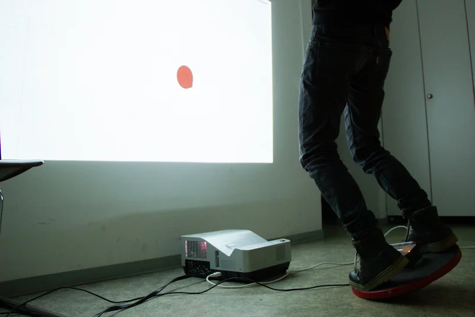
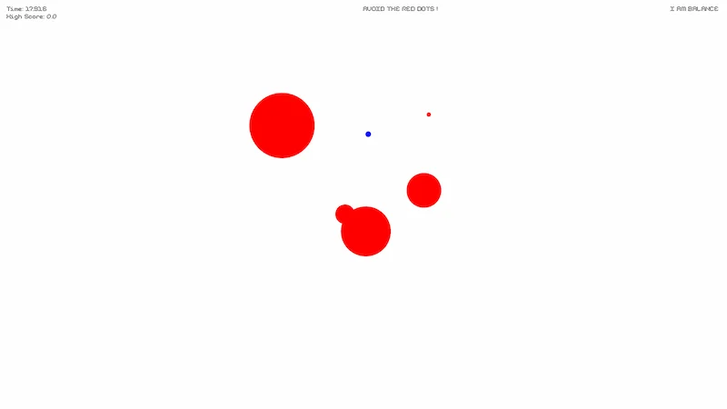
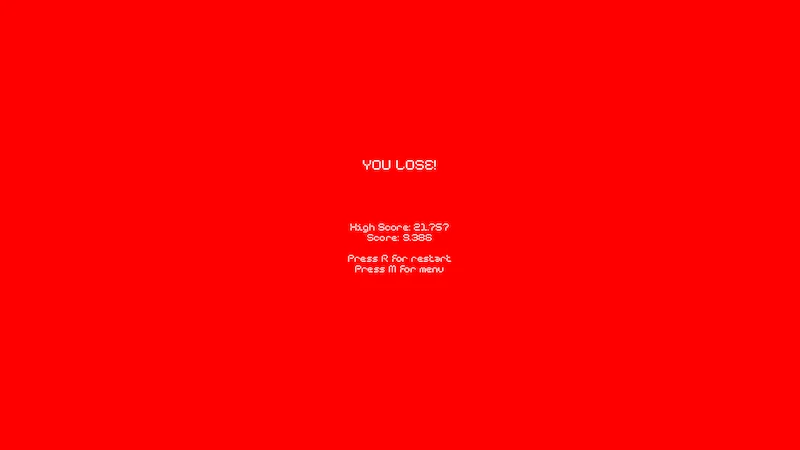
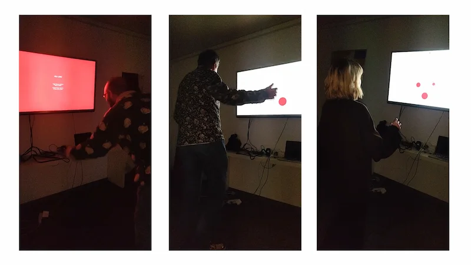
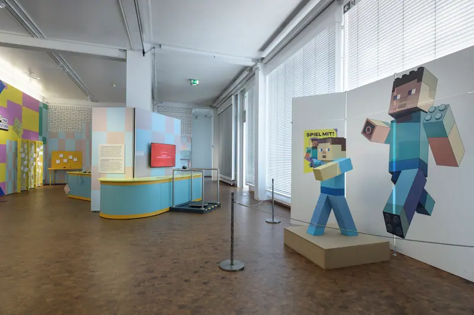
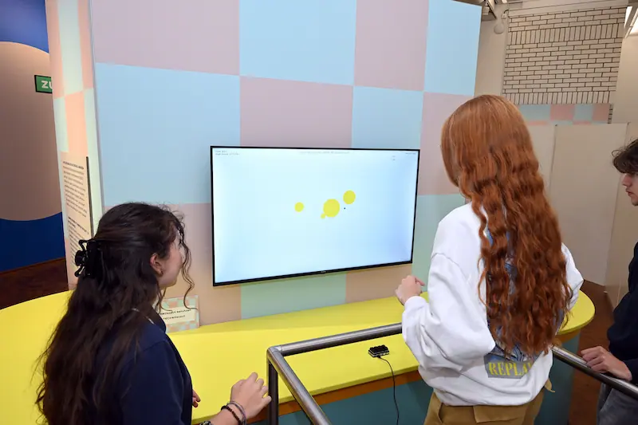

Challenge
The development of a game that contains an unusual aspect and encourages people to play it.
The aim was to present the game at the Games Night event of the Faculty of Design in Mannheim and have it tested by the visitors.
Solution
With our game concept, we want to combine digital and physical elements to create a unique, entertaining experience.
Output
In the game Marbalance the player has to avoid red dots that are getting bigger.
The player, a blue dot, is controlled with the help of a balance board.
The board is equipped with a sensor that records the movement of the board and transmits it to a computer.
As soon as a red dot is touched, the player loses and his score and the high score are displayed.
In the game you can choose between four levels of difficulty, which influence the amount and speed of the red dots.




Teresa Hoffmann, Paco Gutiérrez Hardt, Christian Fagherazzi and me (Sophie Humbert) were involved in the development of the game. The game code was developed by us in the Processing development environment. We were equally responsible for the concept, design, code and hardware. From 22.06.2024 - 09.03.2025 the game was displayed at the Technoseum Mannheim as part of the special exhibition “Spiel mit!”. The museum rebuilt the game for the exhibition in order to improve the safety and resilience of the game.

TECHNOSEUM, Foto: Klaus Luginsland

TECHNOSEUM, Foto: Thomas Henne